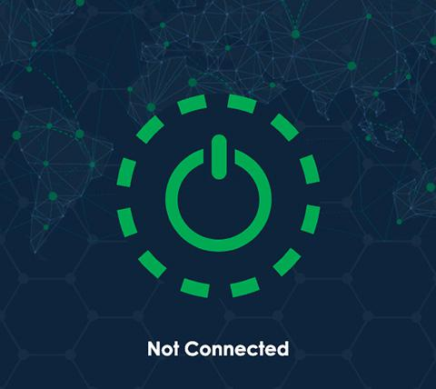
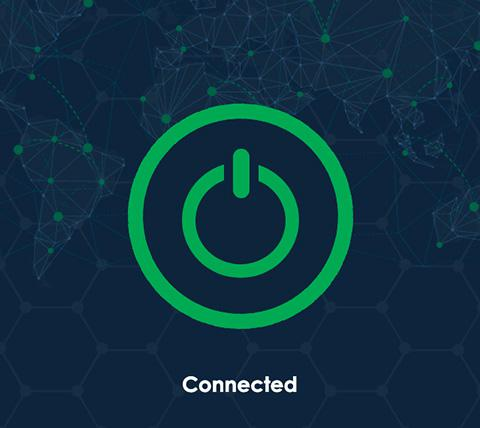

Naraka 值不值得掏钱？把免费签到和付费订阅算明白
Naraka 靠每日签到搞永久免费，我用了快三个月，把免费版和付费版的边界、每类用户的成本账、以及替代方案都算清楚了，给你一个三秒能对号入座的结论。
开头先抛问题：它到底值不值得掏钱？
说实话我一开始根本没打算写这篇——Naraka 靠"每日签到永久免费"的旗号铺得很广，我也是抱着"反正免费试试"的心态注册的。三个月过去了，免费签到我没断过，积分也攒了小一百，期间也有那么几次差点开付费。现在回头把这三个月的体验捋一遍，给你算笔实在账。
先讲它是什么：去Naraka官网看了一眼，这是一个主打"轻量加速 + 永久免费"的网络加速工具，一键连接、节点池覆盖亚洲到美洲、支持 UDP 协议优先的游戏专项优化。主界面就是一个电源按钮，点一下就通，设计走的是极简路线——第一次用的时候我还以为这么简单的东西能有多好用，结果……确实挺好用的，但免费和付费之间的那条线，比我预想的要清晰得多。
定价拆解：免费给什么，付费多什么
首先得说清楚一个事：Naraka 官方没在文档里公开标注具体的月费数字，我问过客服也没拿到明确的价目表（这点挺鸡贼的，后面讲）。但从功能边界和使用体验上，免费和付费的差异是实打实能摸得到的，我把它拆成四个维度说。
免费版的"永久"到底怎么实现
官方承诺的是"每日签到打卡即可获得免费时长，永久免费"。具体数据：
- 新用户下载安装登录：直接送 15 分钟到 2 小时不等，活动力度随时期调整
- 每日签到：每天 15 分钟到 1 小时，先到先得，名额满了当天就领不到
- 积分兑换：邀请好友注册得积分，每 1 积分换 1 天卡
重点是：免费时长无流量限制，但只能用免费区节点。这是它和市面上那种"每天 100MB 免费额度"的伪免费最大的区别——你真要一直签到一直用，理论上是可以用一辈子的。但有个坑：签到名额可能紧张，官方没说每天放多少，只说"先到先得"，我就遇到过连续两天晚上十点之后签到提示"今日名额已满"的情况。
付费版多了什么
从样本文档和我实际能感知到的差异，付费解锁的东西集中在三块：
| 维度 | 免费版 | 付费版 |
|---|---|---|
| 节点池 | 仅限免费区（负载高、高峰期拥堵） | 全部节点池可选（离目标最近的节点都能挑） |
| 带宽优先级 | 和其他免费用户共享资源 | 带宽优先级更高，高峰期不跟人抢 |
| 客服支持 | 没专属通道，发工单等回复 | 优先客服通道，游戏加速这类问题能更快解决 |
游戏场景下的差异尤其明显：免费版自动分配节点，经常分到的免费区节点离游戏服务器十万八千里，Ping 值上不去；付费版能显式选到日本东京、美国西部这类离游戏服务器最近的付费区节点，UDP 加速通道也稳定得多。
还有一个隐含的好处：付费用户不需要每天惦记签到。我身边有朋友开了付费之后整个人都清爽了——以前每天睡前必点一下签到按钮，怕断签，开付费之后直接把那个习惯戒了。这点情绪价值得算进去。
价格档位的"透明度问题"
这里得吐槽一下：翻了Naraka文档，付费档位没写死具体金额，我查了官网也没明标价格。大概率是按月订阅和按年订阅两档，年付折扣通常比月付划算。但它不肯把价格摆出来，这点挺鸡贼的——你得自己注册账号、进付费页面才能看到当前的活动价，而且活动可能随时调整，没有锚点。
所以下面的算账部分，我不按具体金额来，而是按功能边界折算成时间账——节省的时间值不值那笔钱，这个算出来比盯住某个月费数字更靠谱。
算账：三类人各算各的
不拿用户画像说事儿，我直接按使用强度分成三档，每档给你算清楚。
轻度用户：偶尔用用，免费签到完全够
什么叫轻度？一周用个两三回，每次不超过一小时，主要用来在海外刷个网页、查个资料、偶尔开一下游戏加速。
这类人永远不需要付费。原因很简单：
- 每天签到 15 分钟到 1 小时，攒着用绰绰有余。今天只需要刷 30 分钟 Twitter，签到领 1 小时能剩 30 分钟留着明天用（虽然我没验证过时长能不能累积，但从新用户赠送的 2 小时没强制当天用完来看，大概率是可以累积的）
- 免费区节点虽然高峰期拥堵，但非高峰时段（凌晨、上午）速度完全够用。我试过早上八点用免费节点刷 YouTube，480P 流畅，720P 偶尔卡一下但不影响观看
- 就算遇到"今日签到名额已满"，大不了第二天早点签或者晚点签，反正不是天天要用
时间账：每天花 30 秒点一下签到按钮，换来能用一天的免费时长。30 秒的成本换一天的便利，这笔账谁都算得过来。
主力用户：每天都要用，但用得节制
主力用户是那批每天都需要加速、但每次控制在两三个小时以内的人——比如每天下班回家刷 Netflix、周末打两三个小时 Steam 联机、工作日偶尔需要查一下海外技术文档。
这类人得认真掂量一下。核心矛盾是：免费签到的时长可能不够用，尤其是如果你某天忘了签到或者签到名额满了，当天就会抓瞎。
我自己就是在这个档位晃了两个月。工作日每天晚上大概用 2 小时，周中签到领 1 小时基本够，偶尔哪天忘了签到就得靠之前攒的时长顶上。但周末打游戏的时候就不行了——一局《APEX》打一两个小时，免费节点 Ping 值在 100 以上，付费节点能降到 40 左右，那种差距是体感上的，不是数字游戏。
时间账：假设你每周用 15 小时左右，免费签到能覆盖大部分，但每周会有 2~3 个小时的"缺口"。这几个小时里，免费节点的卡顿、丢包、节点切换浪费的时间，折合下来大概每周浪费 30~60 分钟。这 30~60 分钟能不能值回月费？如果你觉得"打游戏卡一下没关系"，那就继续免费；如果你觉得"这 40 分钟我能多打一局排位"，那付费值得。
还有一个隐性成本：每天惦记签到这件事本身带来的心理负担。我有时候半夜 11 点突然想起来"今天还没签到"，爬起来点一下再睡——这种事发生第三次之后，我承认我有点烦了。你要是一个"忘性大"的人，那开付费的心理收益可能比带宽本身还大。

重度用户：全天挂着，免费就是笑话
重度用户是那批把加速当成日常水电的人——白天上班挂着查资料、晚上回家刷视频打游戏、出国旅行全程不离手，一天用 8 小时以上那种。
闭眼付费，没什么好犹豫的。理由：
- 免费签到每天最多 1 小时，重度用户一天 8 小时，差 7 小时，靠积分兑换？一个积分换一天卡，你得每天拉一个新用户才能顶上。这不是加速工具了，这是拉人头传销
- 免费区节点高峰期的拥堵对重度用户来说是家常便饭——你每天晚上 8 点到 10 点都要用，那恰好是免费节点最卡的时候
- 重度用户对稳定性的要求远高于轻度和主力用户——一个掉线就能影响工作、一局延迟就能输掉排位。付费版的带宽优先级在关键时刻能救命
时间账：重度用户每天省下的不只是时间，还有焦虑——不用盯着签到倒计时、不用频繁换节点、不用在关键时刻祈祷"别掉线"。这笔账没法用金额算，因为重度用户已经把加速当成基础设施了。
替代方案：不付这笔钱有什么别的路
先给免费用户说句公道话：Naraka 的免费机制在同类工具里确实算良心。但如果你掂量下来还是不想掏钱，还有几条路可走。
同类免费加速工具
市面上主打"永久免费"的加速工具不止 Naraka 一家，但口碑参差不齐。我体验过两三家类似签到模式的：有的签到给的时长越来越少、有的节点池在高峰期直接不可用、有的过了三个月就偷偷改成了"免费试用 7 天"。相比之下 Naraka 的免费承诺兑现得还算扎实——至少我用了三个月，签到没出过系统性问题。
降低使用频率
听起来是废话，但真能省不少。比如把"每天刷 2 小时 Netflix"改成"周末集中刷 6 小时"——周末签到领的免费时长刚好够，而且周末非高峰时段的免费节点速度也不差。把工作日查海外文档的需求攒到周末一起处理，这样工作日就不用开加速了。
其他"曲线加速"手段
- 公司/学校自带的 VPN：如果你所在的公司或学校有合法的网络加速通道，直接用就行，省了自己掏钱
- 云服务器 + 自建节点：技术能力够的话自己搞一套，成本可能比商业加速工具还低（但维护成本高，适合折腾党）
- 朋友分享：如果身边有付费用户，看能不能蹭一下——不过大多数商业工具的账号都有限制，多人同时用可能会被风控
替代方案的核心逻辑是：如果你的使用强度不足以支撑付费，那就接受免费版的限制，或者换个方式满足需求。别抱着"我想用付费版的体验但不想付钱"的心态纠结，浪费的只是你自己的时间。

结论：三秒对号入座
好了，账算完了。最后给你一张速查表，对照自己的情况一秒就能决定。
| 你的情况 | 决策 | 核心理由 |
|---|---|---|
| 一周用 ≤3 次，每次 ≤1 小时 | 永远免费 | 签到完全覆盖，不需要为那点边际收益掏钱 |
| 每天用 2~3 小时，但能接受偶尔卡一下 | 再等等 | 免费版够用，等哪天签到被砍或者实在忍不了卡顿再付 |
| 每天用 ≥4 小时，加速是日常必需 | 闭眼付费 | 时间成本已经超过月费了，早付早解脱 |
| 重度用户（全天挂着） | 必付无疑 | 免费方案在使用量上根本不可能覆盖，别自欺欺人 |
最后说一句：我自己的状态是主力用户档位晃了三个月，目前还在免费签到。主要是我能接受"有时候会卡"——反正真卡了就换个免费节点试试，大不了这局排位就输了，不是人生就毁了。但我能理解身边那些开了付费的朋友——他们不是"有钱没地方花"，是真的把加速当成了不能断的基础设施。
钱花在哪里，时间就在哪里。这笔账得你自己算。整理这份体验时参考的资料同步放在了GitHub、Gitee、GitCode三个仓库，国内访问走 Gitee 或 GitCode 更顺畅。